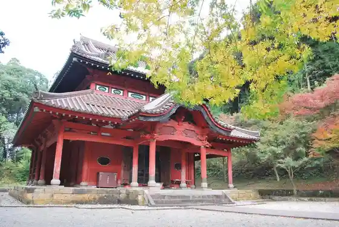
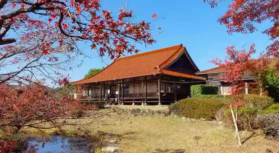

Taku
Taku · Saga
Taku
Highlighted on the Saga map.
Sights
Taku Seibyo

Kishikawa Manju Morigami Shoten
Nishi Kei Park

Oni no Hana Yama Ikoi no Mori Park
Art studio Bondoba / Bondoatosutoa
Taku Tourism Association
Shoko Tera no Nisen Nen Hasu